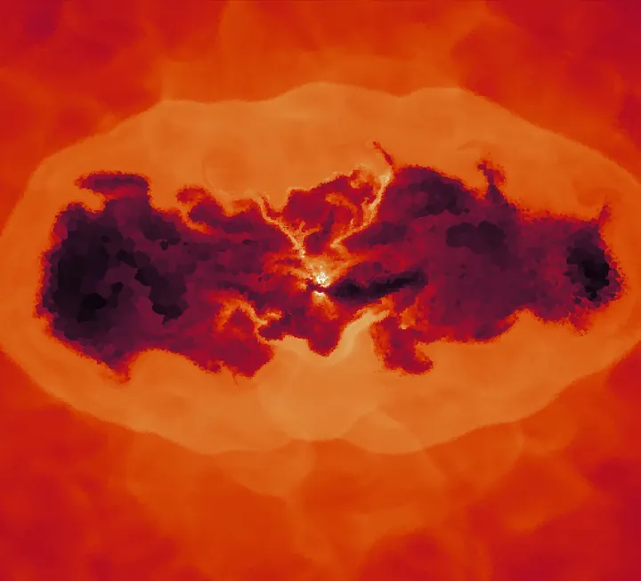
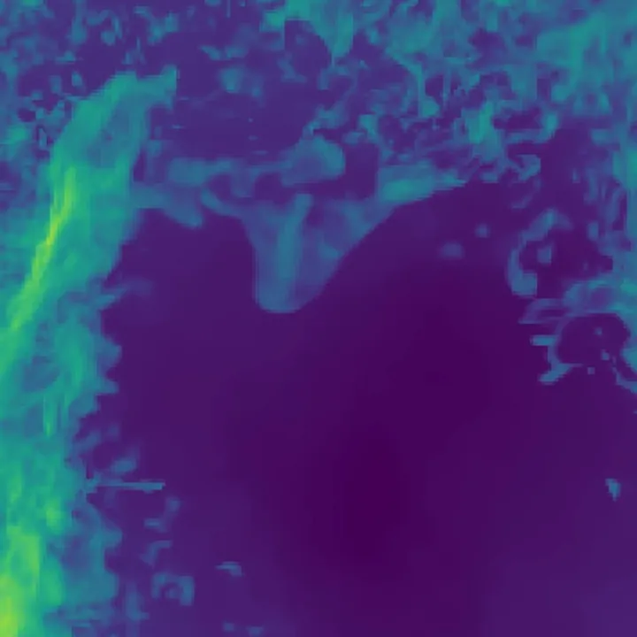

Research
I'm interested in computational astrophysics: building simulations of astrophysical systems, running them on supercomputers, and taking them apart to understand the physics that drives them.
Most of my work uses hydrodynamical simulations of the gas in and around galaxies. The hot gas that fills galaxy groups and clusters radiates energy quickly enough that it should cool, sink towards the centre and form stars at enormous rates. Observations show that mostly doesn't happen. The leading explanation is feedback from active galactic nuclei (AGN): supermassive black holes that feed on gas and launch powerful jets, pumping energy back into their surroundings.
Much of the detailed modelling of AGN jets has focused on massive galaxy clusters. I simulate them in galaxy groups, which are smaller, far more common and have shallower gravitational potentials, so a single black hole can reshape the whole halo. Understanding feedback there tells us how galaxies and their surroundings regulate each other across a wide range of masses.
The same hot, turbulent gas also contains much colder clumps. Whether they survive, grow or evaporate affects how much cold fuel is left for star formation and for the black hole itself, and that's the question I worked on during my internship.
Projects

Carving Cavities in the Cosmos
How much can a black hole's jets reshape a galaxy group? I simulate resolved AGN jets with AREPO and find that they push gas out of group cores far more effectively than in massive clusters, with jet material reaching the edge of the halo.
Read about my thesis
When do cold clouds survive?
Cold clouds a thousand times denser than their surroundings are shredded by turbulence unless they cool fast enough. Across 33 Athena++ simulations, we found they need to cool about ten times faster than the established criterion predicts.
Read about the internshipTools
I run simulations with AREPO and Athena++ on HPC clusters managed with SLURM, and do my analysis and visualisation in Python with NumPy, SciPy and Matplotlib.